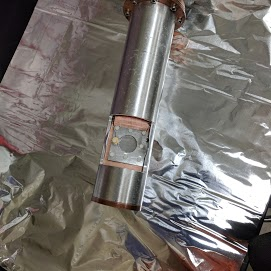
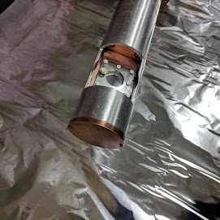
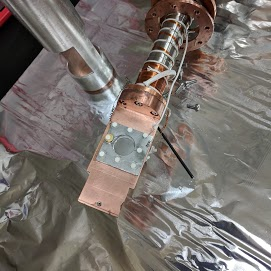
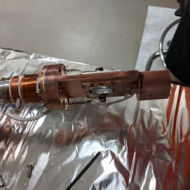
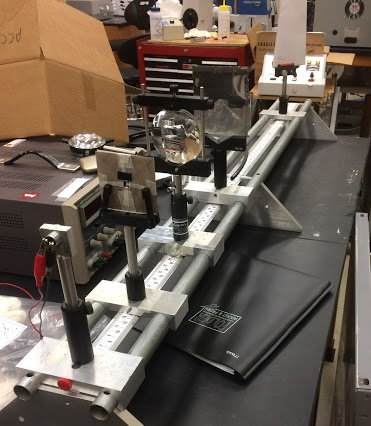

Spectroscopy Sample Holder with Radiation Shield
I designed in SolidWorks both the sample holder and radiation shield, then
machined both from stock metal in the UCF physics department machine shop.
The sample holder is made from Oxygen-Free Copper (OFC), which due to its
reduced level of impurities possess the high thermal and electrical
conductive properties of elemental copper. The thermal conductivity is of
particular importance to use, since the sample holder is attached to a
cryostat which can bring our sample down to 10 Kelvin. The radiation shield
is meant to absorb external thermal radiation before it reached our sample
holder or cryostat, allowing for more constant low temperatures. Our sample
holder is made to hold a 1 inch diameter KBr window, on which we deposit
ices for irradiation experiments. The KBr window is allows us to perform
transmission mode Fourier Transform InfraRed (FTIR) spectroscopy on our
irradiated ices, in search of product formation within the ice. The steel
cap in the front of the sample holder is electrically isolated from the rest
of the sample holder and grounded to prevent charge build up when irradiating
our sample.




Thick Lens Experiment
To the left is a Thick Lens Experiment I built during my undergraduate
degree. I built the tracks and carts from scratch, using only the equipment
in our departments machine shop and stock aluminum. The lens holding fixture
were pre-made however I made small modifications for them to work for the
desired purpose. This is currently used as one of the required experiments
in the 'Advanced Laboratory' course at UCF.
